4.1.10. Dbb: disk blackbody model¶
We take the model for a standard Shakura-Sunyaev accretion disk. The radiative losses from such a disk are given by
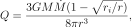
where
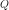
is the loss term in W m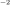
at radius ,
, 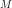
the mass of the central object,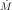
the accretion rate through the disk and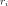
the inner radius. If this energy loss is radiated as a black body, we have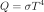
with
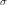
the constant of Stefan-Boltzmann and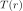
the local temperature of the black body. The total spectrum of such a disk is then obtained by integration over all radii. We do this integration numerically. Note that for large,
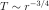
.Warning
A popular disk model (diskbb in XSPEC) assumes this temperature dependence over the full disk. However, we correct it using the factor
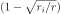
in which corresponds to the torque-free condition at the inner boundary of the disk.The photon spectrum of the disk is now given by
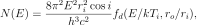
where
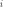
is the inclination of the disk (0 degrees for face-on disk, 90 degrees for an edge-on disk), the photon energy,
the photon energy,
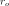
the outer edge of the disk, and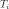
is defined by(1)¶
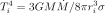
and further the function
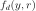
is defined by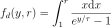
where
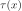
is defined by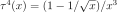
.In addition to calculating the spectrum, the model also allows to calculate the average radius of emission
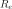
at a specified energy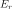
. This is sometimes useful for time variability studies (softer photons emerging from the outer parts of the disk).Given the fit parameters and , using (1) it is straightforward to calculate the product
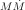
. Further note that if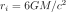
, it is possible to find both and , provided the inclination angle is known.The parameters of the model are:
norm : Normalisation  (
(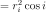
), in units of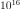
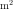
. Default value: 1.t : The nominal temperature in keV. Default value: 1
keV.ro : The ratio of outer to inner disk radius, 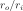
ener : Energy at which the average radius of emission
will be calculatedrav : Average radius of all emission at energy
specified by the parameter above. Note that this is not a
free parameter, it is calculated each time the model is evaluated.Recommended citation: Shakura & Sunyaev (1973).